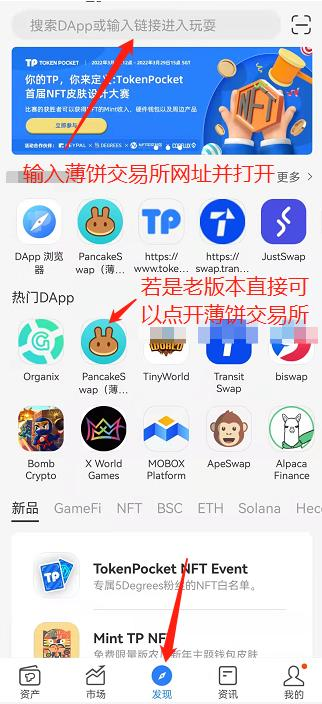
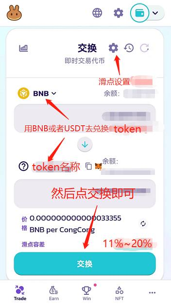

如何在薄饼交易所购买Token的教程
1.如果是移动或灵通的网络需打开黑洞加速器。
2.打开TP钱包并创建或导入BSC(币安智能链)钱包。
在BSC钱包中通过合约地址导入Token。
3.在TP钱包的【发现】中打开薄饼交易所并连接BSC钱包。
tp钱包内薄饼交易所链接：
https://exchange.pancakeswap.finance?utm_source=tokenpocket

连接钱包
4.复制目标Token的合约地址，然后把该Token添加到薄饼交易所列表中。
然后添加Token到薄饼交易所列表中。
5.用BNB或USDT兑换Token(需要用BNB做手续费)，并设置相应的滑点(通用滑点11%~20%)。

注：什么是滑点？
麒麟通证，欢迎您的加入！